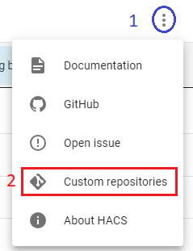

Installation¶
HASS.Agent consists of two parts: the client/Windows app and the Home Assistant integration. You will need to install and configure both of these to use most of HASS.Agent's features.
Migrating from pre-2.0.0?
If you already have HASS.Agent installed from before 2.0.0 checkout the section at the bottom for information on migrating.
Prerequisites¶
- Home Assistant: Ensure that your Home Assistant version is newer than
2023.6.0. If you need help with Home Assistant, refer to the official documentation. - MQTT: Set up an MQTT broker and install/configure the MQTT add-on in Home Assistant. A simple guide for MQTT setup can be found here.
- Windows 10/11: HASS.Agent supports Windows 10 and 11. Older versions may work, but functionality is not guaranteed.
I don't want to install or use MQTT, can I still use HASS.Agent?
You don't have to have MQTT to use HASS.Agent; however, most features rely on it for bidirectional communication. Without MQTT, only Quick Actions will work.
Installing HASS.Agent¶
To get started with installing HASS.Agent, follow these steps:
- Download the latest installer from here.
- Open the installer and follow the on-screen instructions.
- Optional: The installer allows you to copy the configuration from the previously installed version of HASS.Agent (Pre-2.0.0).
Installing the Home Assistant Integration¶
I don't want to use the HASS.Agent integration at all
You don't have to use the integration however you will lose access to the Media Player and Notification features.
After installing HASS.Agent on your PC, follow these steps to install the Home Assistant integration:
- Ensure you have HACS installed. If not, follow the installation guide here.
-
Click the three dots at the top right of the HACS integrations screen
- Select "Custom repositories"
-
Paste in the below info
- Repository:
https://github.com/hass-agent/HASS.Agent-Integration - Category:
Integration
- Repository:
-
Click "ADD"
-
Click the button below to open the integration
- Click "Download" in the bottom right to install


I don't want to install HACS, can I still install the HASS.Agent integration?
Yes, it is possible to install the integration without HACS; however, it is more difficult. Find more information here.
Finishing up¶
After installing both the integration and client/Windows app, proceed to the initial setup and configuration.
Info
After installation, you can delete HASS.Agent.Installer.exe.
Migration from pre-2.0.0¶
If you have HASS.Agent from before 2.0.0 you can follow the steps below to migrate to the new one.
Take backups optional¶
HASS.Agent v2 has a migration process to copy config from v1, however if you don't want to risk losing your previous config you can take a backup by copying the entirety of the config folders somewhere else on your computer. By default they are stored in these 2 folders:
Main Config¶
Satellite Service Config¶
Install 2.0.0+¶
Install the latest hass.agent client by following the steps above, make sure to tick the option to migrat config at the end.
Entity Naming Changes
After migrating from pre-2.0.0 you may get console errors due to changes in entity naming, more information and a solution is available here.
Install the latest integration as normal with the guide above.
Remove old HASS.Agent optional¶
There is no need to have the old HASS.Agent installed so you can now remove it from settings or control panel. It will be called "HASS.Agent", the new one is called "HASS.Agent 2".
Warning
It is recommended you remove the old integration to ensure there is no conflict, simply select the integration in HACS and you will find delete under the 3 dots.